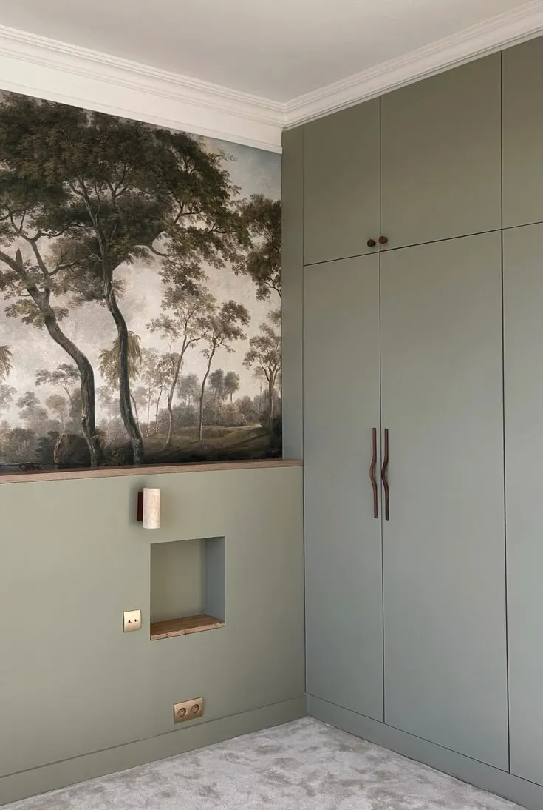

Stouls Studio / Portfolio / Appartement Neuilly-sur-Seine
Appartement Neuilly-sur-Seine
- Type de bien
- Appartement
- Lieu
- Neuilly-sur-Seine, à l'ouest de Paris
- Surface
- Environ 90 m²
- Usage
- Résidence principale
- Intervention du studio
- Menuiseries sur mesure dans plusieurs pièces : conception, sourcing et suivi partiel de chantier



Un projet comme celui-ci
Si ce projet ressemble à ce que vous avez en tête, dites-le-moi. Un lien vers cette page et deux lignes sur votre budget et votre calendrier suffisent pour commencer.
Précédent : Appartement MontparnasseSuivant : Mobilier sur mesure